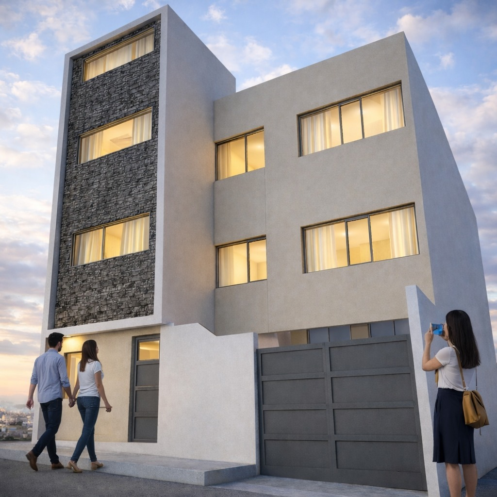
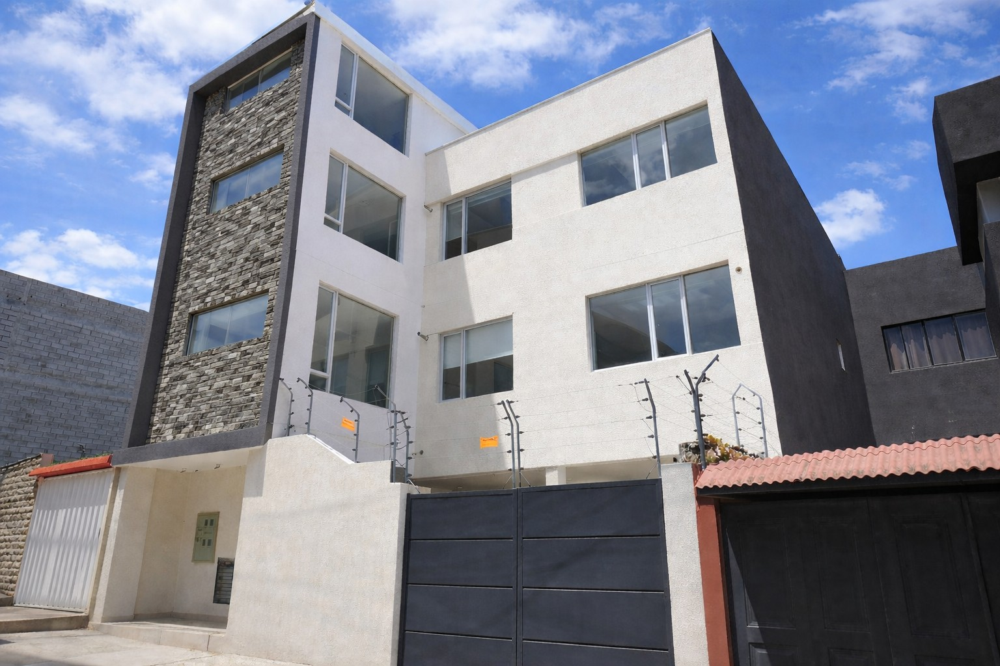
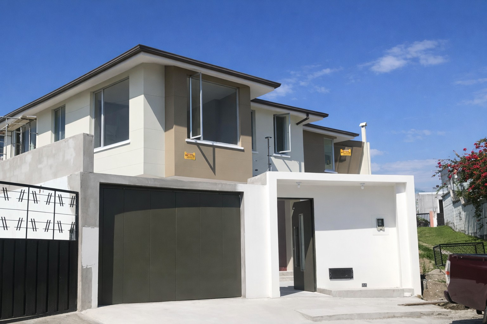
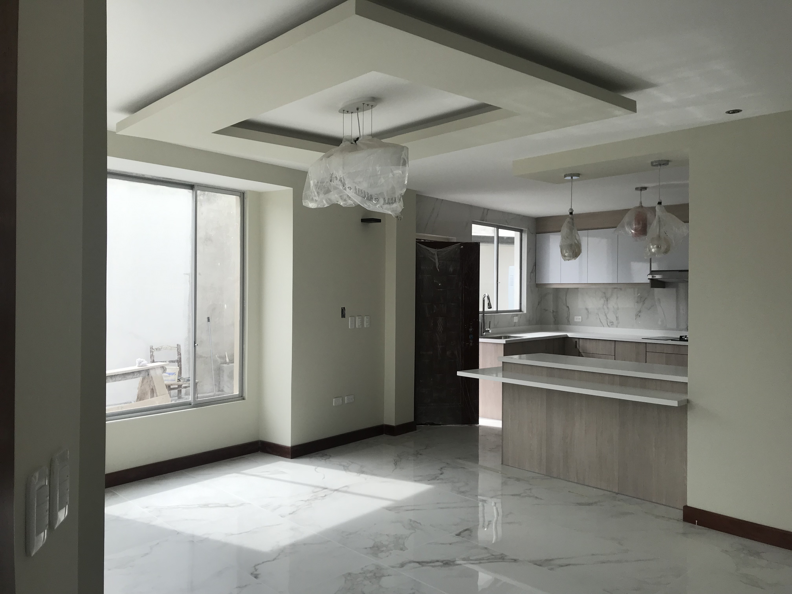
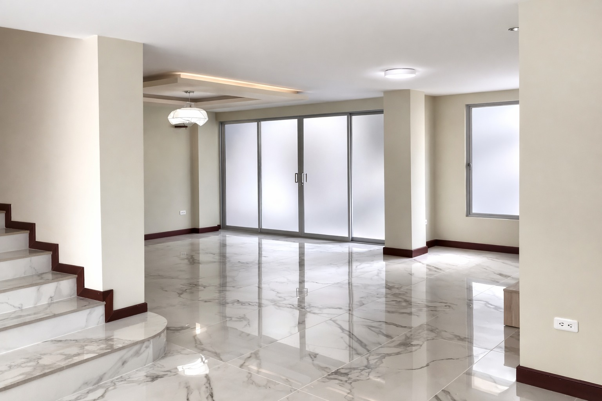
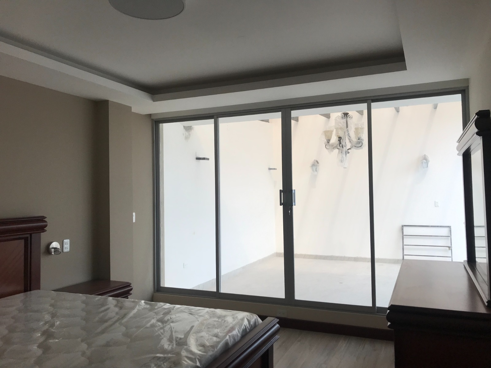
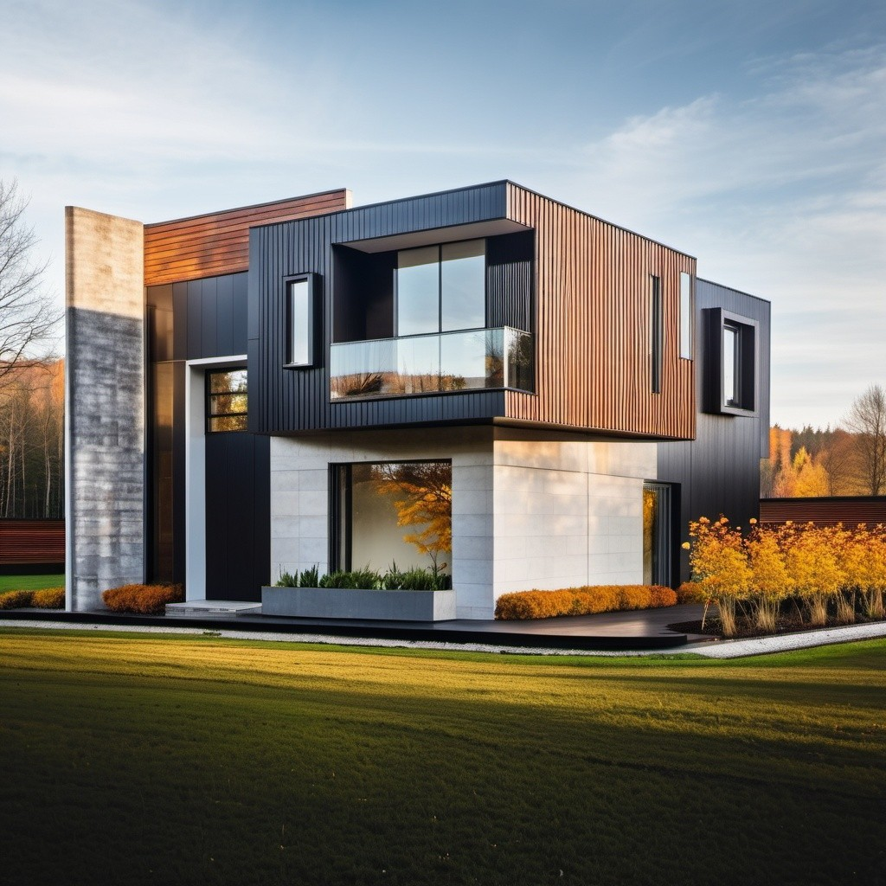
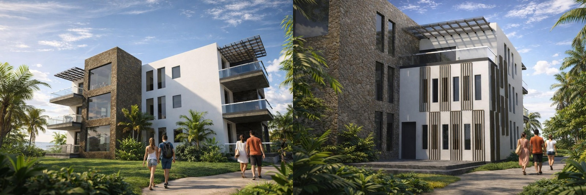
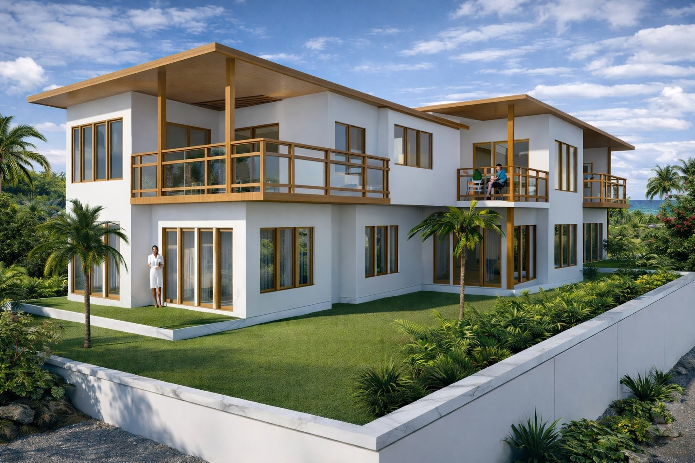
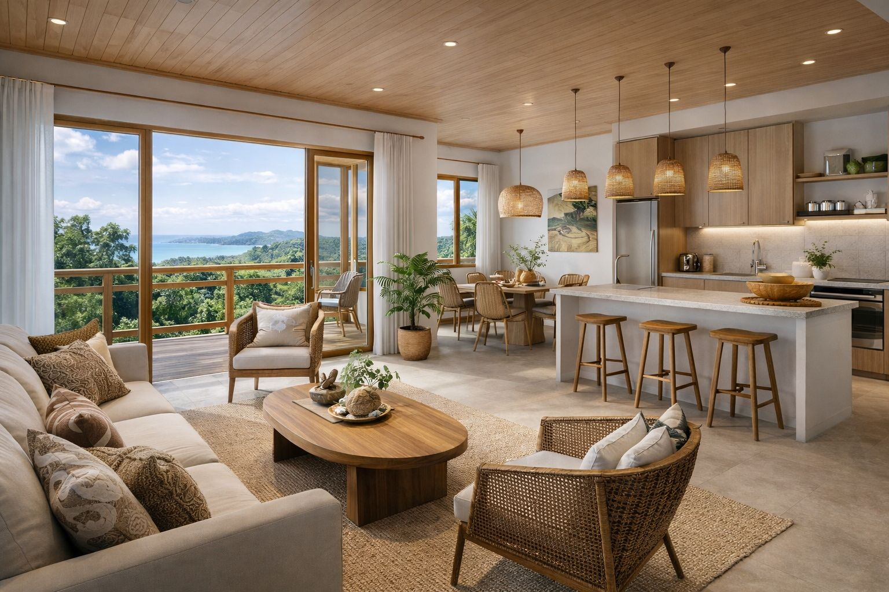

Edificio Gallardo - Tayo
📍 Valle de los Chillos – Quito, Ecuador
Estado:
Diseño - Permisos de Construcción
Año:
2025-2026
Es un proyecto familiar con varios departamentos y locales comerciales. Se compone de 3 departamentos de 180 m2 c/u, una suite de 50 m2 y 2 locales comerciales de 16 m2 c/u. Se emplaza en un lote junto a una quebrada, que permite distribuir el proyecto desde el subsuelo. El área total de construcción es de 750 m2.
Edificio Fortaleza
📍 Carcelén Alto – Quito, Ecuador
Estado:
Diseño - Construcción
Año:
2023
Este proyecto es un edificio familiar compuesto por 3 departamentos, uno por cada planta. En planta baja el departamento tiene 130 m2 y en la 1ra y 2da planta cada departamento tiene 150 m2. Además se desarrolla en subsuelo toda el área de parqueaderos privados y de visitas. En total el proyecto tiene 650 m2 de área construida.


Casa Bassante
📍 Cumbayá – Quito, Ecuador
Estado:
Diseño - Construcción
Año:
2018
Es una vivienda unifamiliar implantada en un terreno de 5 lados con un área de 210 m2 sobre una cuchara. Se desarrolla en función de la morfología del terreno, el cual tiene un área de 210 m2. La casa se desarrolla en 200 m2 en dos plantas.




Conjunto Residencial Villa Vega
📍 Tumbaco – Quito, Ecuador
Estado:
Diseño
Año:
2018
Proyecto residencial de 22 casas pareadas de 160 m², con diseño contemporáneo.


Conjunto Residencial Bosques de Olón
📍 Olón – Santa Elena, Ecuador
Estado:
Diseño
Año:
2018
Es un complejo vacacional y de vivienda sobre la Ruta del Spondylus. Se compone por 7 bloques de departamentos y 63 unidades de vivienda en total, diseñado para integrarse con el entorno natural de la costa.


Suites-Ayala
📍 Santa Cruz – Galápagos, Ecuador
Estado:
Diseño e Interiorismo
Año:
2024
Es un proyecto que tendrá el enfoque de alquiler para turistas. Se compone de 4 suites distribuidas 2 al frente y 2 al lado posterior. El ingreso está centralizado por el medio y allí distribuye a los 4 ingresos. Tiene un área de 60 m2 cada suite y en total el proyecto cubre 230 m2. No se proyecta espacios de parqueaderos pues no es permitido comúnmente el tránsito de automotores en las Islas Galápagos.

